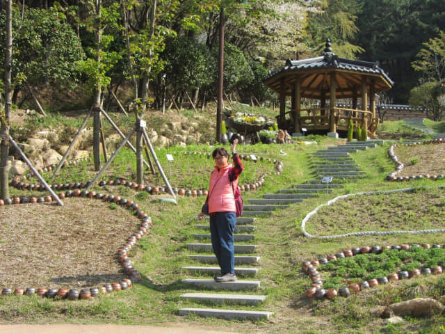
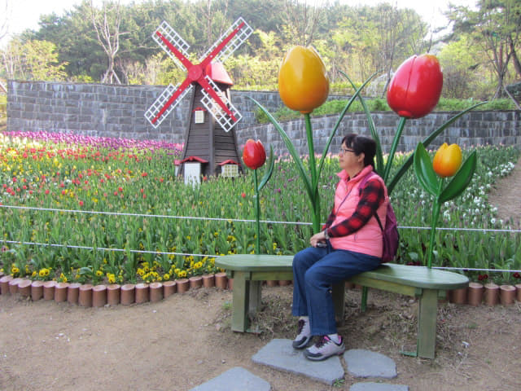

早上八時從我們下榻的沙上區路易斯酒店出發, 走走看看, 於早上九時十分來到釜山沙上近鄰公園 (사상근린공원)的入口, 這時才知道原來公園是在山上的, 幸好不是太高, 並不辛苦, 也很高興有兩位老人家做了我們的免費嚮導, 從山下的歷史路一直帶領我們來到公園入口, 相信如果不是這樣, 那會有那麼順利!

那兩位老人家可能看見我們仍然跟著他們, 坐在公園入口前, 看看我們有什麼行動。
好啦! 害得人地心慌慌的, 不要再跟著他們了! 其實正確是不用再跟著他們了! 現在開始是自由活動時間。
抬頭望望公園, 沿著山坡而建, 環境相當清幽。
釜山沙上近鄰公園入口處的遊覽地圖。公園分開十個不同主題的園區:
我們沒有理會什麼園區, 只是信步而行。
Okay! 進入釜山沙上近鄰公園。迎面是公園的名稱。地圖上的名稱是「사상근린공원」, 有些不同的。其實經常遇到這情況, 所以很多時都懷疑韓文是否還未完全統一。
溫馨花園 (맞이정원)
進入公園, 沿步道往上走。迎接我們是第一個園區 — 溫馨花園。溫馨花園內是幸福家庭的雕像。
接著沿步道往上走。按地圖所示, 這裡應該是圖片區 (포토존), 但園林中只有幾隻蝴蝶和一排風車。
草藥園 (약초원)
呵呵呵~~~ 這株櫻花漂亮極了! 樹下還有很多鳥屋。
韓國花園 (한국정원)
繼續沿步道往上走, 山坡上是韓國花園區, 釜山沙上近鄰公園的景色相當優美。

迷你荷蘭花園 (미니 네덜란드정원)
我們先遊覽右邊的迷你荷蘭花園, 這裡有一個鬱金香園, 配合荷蘭的風車, 非常漂亮。
